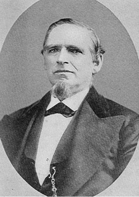

The history of Lorenzo Wesley Roundy
by Joseph F. Buchanan, great-great-grandson

Lorenzo Wesley Roundy
Born: 18 June 1819, Spafford, Onandago, New York
Died: 24 May 1876, drowned in the Colorado River at Lee's Ferry, Arizona
The son of Shadrach Roundy and Betsey Quimby